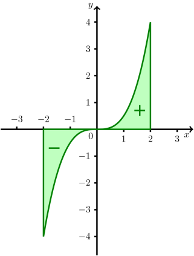

Kursinhalt
Kursinhalt Einführung
Einführung Mein Kurs
Mein Kurs Einstellungen
Einstellungen Eingangstest
Eingangstest Suche
Suche Das KIT
Das KIT Feedback
Feedback Beta-Version
Beta-VersionOnlinekurs Mathematik - Integralrechnung - Bestimmtes Integral
8.2.3 Eigenschaften des Integrals
Für ungerade Funktionen ist das Integral Null. Sehen wir uns dies am Beispiel der Funktion auf mit an:

Abbildung 2: Ungerade Funktion auf einem Intervall .
Teilen wir den Graphen von in zwei Teile zwischen und bzw. und ein und untersuchen die Teilflächen, die der Graph in beiden Bereichen mit der -Achse einschließt. Wir können die beiden Teilflächen durch eine Punktspiegelung ineinander überführen. Beide Teilflächen sind gleich groß. Bilden wir jeweils die Riemann-Summen, dann stellen wir fest, dass Flächen, die unterhalb der -Achse liegen, im Integral einen negativen Wert annehmen. Wenn wir also die beiden hier abgebildeten Teilflächen addieren, um das Integral über den gesamten Bereich von bis zu berechnen, erhält die Fläche über der positiven -Achse einen positiven Wert, während die Flache unterhalb der negativen -Achse gleich groß ist, aber einen negativen Wert annimmt. Die Summe der Beiden Teilflächen ist also Null. Für ungerade Funktionen gilt die Regel:
Im Fall einer geraden Funktion ist der Graph symmetrisch bezüglich der -Achse. Die Fläche zwischen dem Graphen von und der -Achse ist hier symmetrisch bezüglich der -Achse. Die Teilfläche links davon ist also das Spiegelbild der rechts liegenden Fläche. Beide zusammen ergeben die Gesamtfläche.
In sehr vielen Situationen wird die Berechung eines Integrals einfacher, wenn wir den Integranden vor der Integration in eine bekannte Form bringen. Diese Umformungen wollen wir uns im Folgenden an einigen Beispielen ansehen. Im ersten Beispiel untersuchen wir Potzenfunktionen.